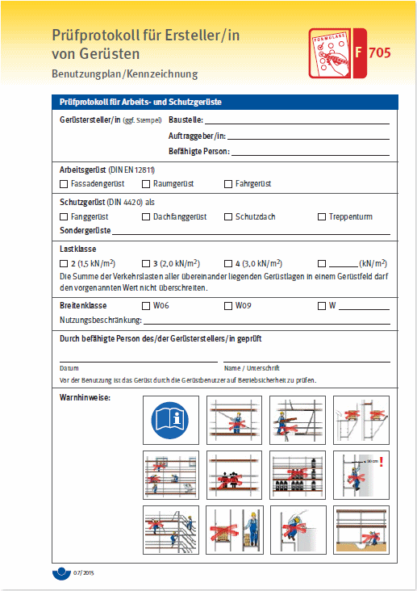
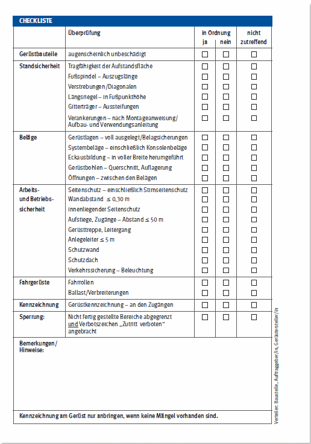
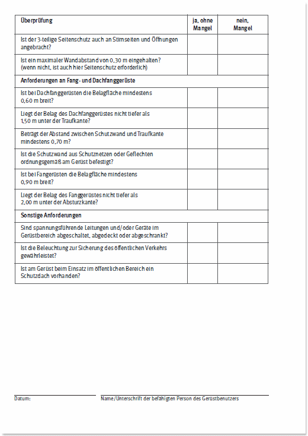
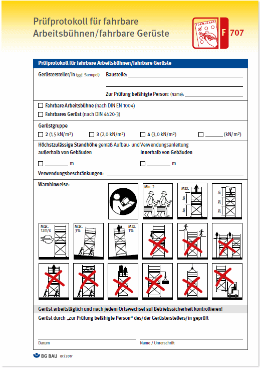
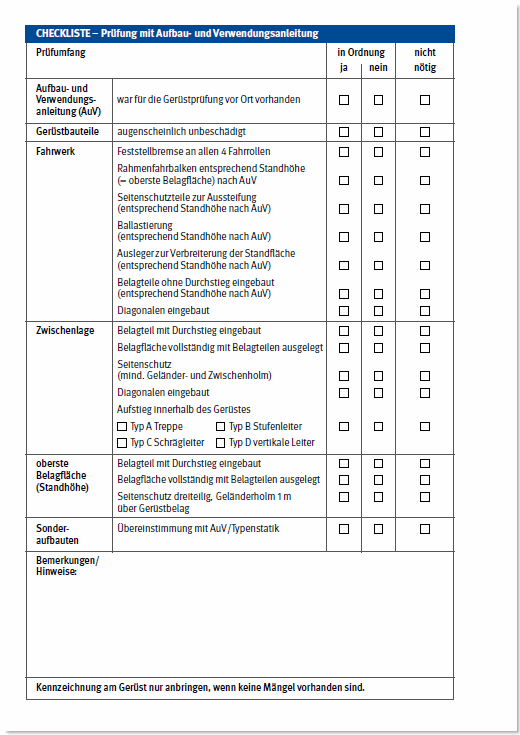

[Bitte nutzen Sie die Suchfunktion des Programms]
| DIN 361:2002-09 | Persönliche Schutzausrüstung gegen Absturz – Auffanggurte (3.11, S. 84) |
| DIN 4074-1:2012-06 | Sortierung von Holz nach der Tragfähigkeit – Teil 1: Nadelschnittholz (3.9, S. 78) |
| DIN 4124:2012-01 | Baugruben und Gräben – Böschungen, Verbau, Arbeitsraumbreiten (3.5, S. 64) |
| DIN 4420-1:2004-03 | Arbeits- und Schutzgerüste – Teil 1: Schutzgerüste – Leistungsanforderungen, Entwurf, Konstruktion und Bemessung (3.6, S. 66) |
| DIN 4420-3:2006-01 | Arbeits- und Schutzgerüste – Teil 3: Ausgewählte Gerüstbauarten und ihre Regelausführungen (3.6, S. 66) |
| DIN 13157:2009-11 | Erste-Hilfe-Material – Verbandkasten C (2.1, S. 6) |
| DIN 13169:2009-11 | Erste-Hilfe-Material – Verbandkasten E (2.1, S. 6) |
| DIN EN 280:2016-04 | Fahrbare Hubarbeitsbühnen – Berechnung – Standsicherheit – Bau – Sicherheit – Prüfungen; Deutsche Fassung EN 280:2013+A1:2015 (3.2.10, S. 48) |
| DIN EN 397:2013-04 | Industrieschutzhelme; Deutsche Fassung EN 397:2012+A1:2012 (3.6, S. 68) |
| DIN EN 813:2008-11 | Persönliche Absturzausrüstung – Sitzgurte; Deutsche Fassung EN 813:2008 (3.11, S. 84) |
| DIN EN 1004:2005-03 | Fahrbare Arbeitsbühnen aus vorgefertigten Bauteilen – Werkstoffe, Maße, Lastannahmen und sicherheitstechnische Anforderungen; Deutsche Fassung EN 1004:2004 (3.2.2, S. 29) |
| DIN EN 1808:2015-08 | Sicherheitsanforderungen an hängende Personenaufnahmemittel – Berechnung, Standsicherheit, Bau – Prüfungen; Deutsche Fassung EN 1808:2015 (3.2.10, S. 48) |
| DIN EN 12492:2012-04 | Bergsteigerausrüstung – Bergsteigerhelme – Sicherheitstechnische Anforderungen und Prüfverfahren; Deutsche Fassung EN 12492:2012 (3.11, S. 84) |
| DIN EN 12811 | Normenreihe Temporäre Konstruktionen für Bauwerke (3.6, S. 66) |
| DIN EN 12812:2008-12 | Traggerüste – Anforderungen, Bemessung und Entwurf; Deutsche Fassung EN 12812:2008 (3.6, S. 66) |
| DIN EN 13155:2009-08 | Krane – Sicherheit – Lose Lastaufnahmemittel ; Deutsche Fassung EN 13155:2003+A2:2009 (3.2.12, S. 53) |
| DIN EN ISO 9612:2009-09 | Akustik – Bestimmung der Lärmexposition am Arbeitsplatz – Verfahren der Genauigkeitsklasse 2 (Ingenieurverfahren) (ISO 9612:2009); Deutsche Fassung EN ISO 9612:2009 (3.1.5, S. 20) |
| DIN EN ISO 10075-1:2000-11 | Ergonomische Grundlagen bezüglich psychischer Arbeitsbelastung – Teil 1: Allgemeine Konzepte und Begriffe (ISO 10075:1991); Deutsche Fassung EN ISO 10075-1:2000 (3.1.7, S. 24) |